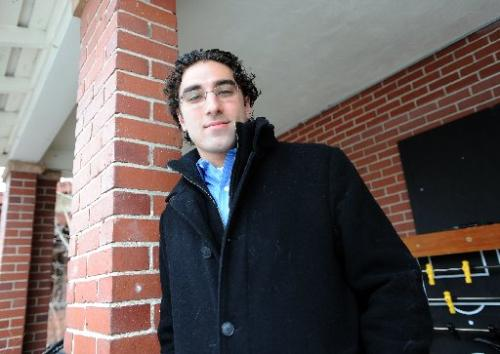

CU-Boulder trip inspires coffee-buying business
Alum plans to bring Nicaraguan coffee to local brewers
Whitney Bryen, bryen@coloradodaily.com

Michael Pearl, a CU alum, started a business buying coffee from a farm in Nicaragua because of his experience on an alternative spring break. (CLIFF GRASSMICK)
For University of Colorado alumnus Michael Pearl, a two-week trip to Nicaragua turned into more than just his last college hurrah.
Pearl attended an alternative break trip through CU’s Volunteer Resource Center in May following graduation and came home with his own business.
The students worked on a coffee farm in northern Nicaragua where Pearl connected with one of the farmers and was inspired to start an organic, fair-trade, coffee buying business that could help grow the business and surrounding economy.
“Basically, I wanted to cut out the middle man,” Pearl said. “Typically, there are several people involved in the buying process so I thought I could buy directly from the farm and sell the coffee to a roaster and cut down on the people involved and increase the profit for the farm.”
About six months after returning from his trip, Pearl launched Cafe Verde Imports and said he is expecting to buy his first batch of coffee any day now.
“These people work so hard and it really inspired me to want to help them,” Pearl said. “They don’t have much but they have such a great attitude about everything and that really made me thankful for what I have and want to use my resources and my international business degree to help.”
Jen Ross, director of CU’s Volunteer Resource Center said the two-week breaks focus on social issues and are intended to impact students like Pearl to make changes inspired by what they learn during the trips.
“It’s what sets alternative breaks apart,” Ross said.
It’s common for students to change majors or career paths following an alternative break trip, Ross said.
Pearl said it was the combination of community and coffee that turned his trip into a business plan.
“We stayed with families on this coffee farm in the mountains while we worked there,” Pearl said. “Every morning we would get up and our family would make breakfast for us from their gardens and we would drink coffee that was grown there and we would have this amazing, fresh coffee every day.”
Cafe Verde Imports is still in the early stages but Pearl said he has plans to expand the business to include travel information about the country as well — another economy booster for the region.
Ross said students still have time to get an application in for this year’s trips but the center offers many local volunteer opportunities for students who aren’t ready to attend a two-week trip.
“Once a student starts working with us, they usually continue,” Ross said.
—
From ColoradoDaily.com
http://www.coloradodaily.com/cu-boulder/ci_19835225#axzz1kxSxHZf9